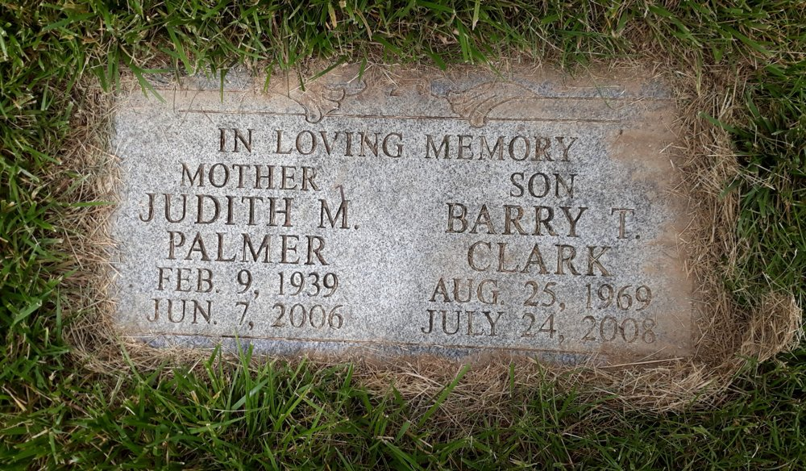

Judith Mae Palmer
9 February 1939 – 7 June 2006
Quick Facts
Immediate Family
Parents
- William Peter Palmer (1 June 1914 – 27 August 2005)
- Mary Jane Williams (23 February 1918 – 1990)
Spouses
- Homer William Brewster Jr. (18 March 1939 – 27 September 2000); married 18 April 1956
- Larry Clark
Children
- Victoria “Vicki” Brewster (born 1957)
- Michael Eugene Brewster (born 1958)
- Garry Anthony Brewster (born 24 December 1959)
- Ronald “Ron” Brewster (born 1962)
- Barry T. Clark (25 August 1969 – 24 July 2008)
On Family Tree Sites
Couple Folder
Life Timeline
9 February 1939 ·
Born in Cincinnati, Hamilton County, Ohio. Social Security records and the shared headstone give this date; the 1940 census index places one-year-old Judith in the Cincinnati household of William P. and Mary J. Palmer. FamilySearch profile and linked records.
18 April 1956 ·
Married Homer William Brewster Jr. in Fentress County, Tennessee, according to the county marriage record/index. The record appears to give both of them as age 18, although their recorded birth dates make them 17. FamilySearch marriage record.
1957–1962 ·
Four children were born to Judy and Homer, according to the family couple profile.
2 May 1968 ·
An Ohio divorce index records a Hamilton County divorce granted to Judith from Homer after twelve years of marriage, with four minor children. The abstract's “Number of this marriage” field is 1 for Judith, indicating that this was her first marriage. Family accounts recall additional ceremonies or marriages and divorces, but no other legal dates have been established.
25 August 1969 ·
Barry T. Clark, identified on the shared headstone as Judy’s son, was born. The headstone does not identify his father. Barry T. Clark headstone record.
6 September 1984 ·
An Ohio divorce index lists Larry Clark and a Judith M., both of Hamilton County, with the wife born in 1939; it records an eight-year marriage and one minor child. This may be Judy and Larry, but the index omits the wife’s surname.
7 June 2006 ·
Died as Judith M. Clark, according to Social Security records and her shared headstone. Her place of death has not been established.
24 July 2008 ·
Barry died, according to his shared headstone and Social Security death index—two years after Judy, not before her.
Life Story
Judith Mae “Judy” Palmer was born in Cincinnati on 9 February 1939. Social Security records and the inscription on her shared headstone give that date. The 1940 census index places one-year-old Judith in the Cincinnati household of William P. Palmer and Mary J. Palmer; the census image has not yet been transcribed in the reviewed research. The 1956 Tennessee marriage record names William Palmer and Mary Jane Williams as the bride’s parents. The Social Security Applications and Claims Index also gives her parents as William P. Palmer and Mary J. Williams. Together these records support the identification of her parents as William Peter Palmer and Mary Jane Williams. Judy’s paternal grandparents were Peter Palmer and Margaret Lorch; her father’s profile describes them as immigrants from Hungary. William Peter Palmer’s profile summarizes the records behind that family history.
Judy and Homer William Brewster Jr. married in Fentress County, Tennessee, on 18 April 1956. The marriage record/index appears to give their ages as 18, although their recorded birth dates would make them 17. Their daughter Vicki later recalled that they eloped, that Homer had said he was 18, and that a man was paid to pose as Judy’s father so they could marry. Vicki also recalled a second ceremony after they returned home; no record of that ceremony or wedding photographs has been located.
The family couple profile names four children with Homer: Vicki, Michael, Garry, and Ron. An Ohio index records one divorce granted to Judy in Hamilton County on 2 May 1968. Family members recall additional marriages and divorces between Judy and Homer. Susan Moore, who married into the family, also recalled that Homer was abusive; this is her attributed family testimony, not a claim independently established by a court or other record.
Michael Eugene Brewster’s later case received national attention. In 2012, the FBI reported that he was arrested in Oklahoma; the U.S. Attorney’s Office later reported that he pleaded guilty to robbing eleven banks in ten states and was sentenced to 135 months in prison. [11, 12]
Family members remember Judy’s home in Hartwell, Cincinnati, as a gathering place for her children, grandchildren, and cousins. Rick remembers the backyard pool, a pet raccoon, and Judy insisting that the children use car seats. One family account recalls that a grandson once smeared something around cousin Ryan’s room and toys, and Ryan accidentally struck him with a Cincinnati Reds bat in Judy’s yard. The family account names Lindsey, Jeremy, Ryan, Amanda, Stefanie, and Randy among Vicki’s and Ron’s children. Amanda identified a family photograph as showing herself, her father Ron, Judy, and Judy’s companion Ralph. Amanda and other cousins recalled that Ralph was Judy’s boyfriend for roughly ten to fifteen years. Family sources also describe a later relationship or marriage between Judy and Larry Clark. A 1984 Ohio divorce-index entry for Larry Clark and a Judith M. born in 1939 is a possible match, but it omits the wife’s surname. The exact marriage date and place, the order of Judy’s marriages, and Larry’s full identity remain unresolved.
Judy’s shared headstone identifies Barry T. Clark as her son and gives his dates as 25 August 1969–24 July 2008. Family sources associate Barry with Judy’s later Clark relationship, but the records reviewed do not establish Barry’s father. The stone corrects the family recollection that Barry died before Judy: Barry died two years after her. A family memory also says Barry had HIV/AIDS; no independent medical record in the reviewed material confirms it.
The Social Security Death Index records Judy as Judith M. Clark and gives her death date as 7 June 2006. It lists Rockaway Beach, Taney County, Missouri, as her last residence, not her place of death. A shared headstone and cemetery indexes identify Spring Grove Cemetery in Cincinnati, although the cemetery’s online lookup did not return a record during the searches documented so far. The cemetery interment record and a death notice or certificate remain useful next sources.
Photographs & Family Gallery



Sources & Records
- 1940 U.S. census index, Cincinnati, Ohio: Judith, age one, in the household of William P. and Mary J. Palmer. The census image has not yet been transcribed. Social Security Applications and Claims Index entries cited on Judy’s FamilySearch/Geni profiles give 9 February 1939 and parents William P. Palmer and Mary J. Williams. FamilySearch profile GRK1-6KF.
- Social Security Death Index / Death Master File and Social Security Numident indexes for Judith M. Clark: born 9 February 1939, died 7 June 2006, last residence Rockaway Beach, Taney County, Missouri; Numident index lists Judith Mae Brewster and Judith M. Clark. SSDI entry; FamilySearch death index; FamilySearch Numident index.
- Tennessee County Marriages, 1790–1959, Fentress County: Homer William Brewster and Judy Mae Palmer, married 18 April 1956; the index names William Palmer and Mary Jane Williams as the bride’s parents. FamilySearch marriage record. The marriage application is page 416, image 272 of 634; the ages appear to read 18, but the image and officiant’s return/signatures have not been fully examined. FamilySearch image.
- Ohio Department of Health divorce index, Hamilton County, 2 May 1968, certificate 010768, volume 01874: divorce granted to Judith from Homer after twelve years of marriage, with four minor children. The “Number of this marriage” field is indexed as 1 for Judith, indicating this was her first marriage. The source consulted is an index, not the full court file. See Homer William Brewster Jr.’s profile for the shared record and his separate marriage-count question.
- Ohio Department of Health divorce index, Hamilton County, 6 September 1984, certificate 035410, volume 05370: lists Larry Clark, born 1940, and a Judith M., born 1939, both of Hamilton County; records an eight-year marriage and one minor child. This may be Judy and Larry but does not name the wife’s surname. Ohio Marriage/Divorce Search index.
- Shared headstone at Spring Grove Cemetery: Judith M. Palmer, 9 February 1939–7 June 2006, and son Barry T. Clark, 25 August 1969–24 July 2008. Judith’s Find a Grave memorial 228001578; Barry’s Find a Grave memorial 228001842. Barry’s Social Security death index gives the same dates and last residence in Cincinnati. Barry SSDI entry.
- Burial indexes: Find a Grave memorial 228001578, the Find a Grave Index on FamilySearch, and BillionGraves entries cited on Judy’s Geni profile identify Spring Grove Cemetery, Cincinnati. Spring Grove’s online burial lookup returned no matching entry in the search recorded 19 November 2026; its interment card has not been obtained.
- FBI, “Bucket List Bandit Arrested in Oklahoma,” 14 September 2012: reports Michael Eugene Brewster’s arrest in Roland, Oklahoma.
- FBI / U.S. Attorney’s Office, “Bucket List Bandit Pleads Guilty to Robbing 11 Banks in 10 States,” 13 March 2013: identifies Michael Eugene Brewster and reports his guilty plea to eleven bank robberies in ten states. The U.S. Attorney’s Office sentencing release, 15 August 2013, reports a 135-month prison sentence.
- SortedByName, “Judith M Clark,” a compiled derivative entry cross-referencing Judith Mae Brewster, Judith Mae Clark, and Judy Mae Palmer. It reports the same dates, parents, and last residence and cites Social Security datasets; it is not an original application. Compiled index.
- WeRelate’s Judith Mae Palmer page links William Peter Palmer and Mary Jane Williams as parents and Homer as spouse, relying on a dated project research note rather than cited original records. WeRelate page. The public WikiTree Palmer index repeats Judy’s dates and identifies Rick as profile manager; it was not independent evidence.
- Family sources: Homer William Brewster Jr. × Judith Mae Palmer couple profile; Vicki’s 7 October 2026 voice-message account of the elopement; Susan Moore’s family account; and family identifications of photographs. Available in the Homer × Judy family folder.
- Marriage to Larry Clark: a BillionGraves entry cited on Judy’s Geni profile names Larry as spouse; a Cincinnati city-directory listing is reported as “Larry Clark & Judith Palmer” / “Judy M Clark.” The images have not been read in the reviewed archive. This does not establish their marriage date or Larry’s full identity.
Person Archive
Browse the records and materials preserved for Judith Mae Palmer in the American Bloodline Master Archive.
- Photographs and images
- Family photographs
- Headstone photographs
- Documents and records
- Research notes
- Sources
- Family books
Research Notes and Open Questions
- Judy’s place of death remains unknown. The Social Security entry for Rockaway Beach, Taney County, Missouri, is a last-residence entry, not evidence of her death place. A Missouri death certificate, a June 2006 Cincinnati/Branson death notice, or a funeral-home record could resolve it.
- The 1940 census image has not been transcribed in the reviewed archive, and the 1950 census household was not located in the prior FamilySearch-index search. Direct inspection of the original Social Security applications would clarify the birth and parent evidence.
- The profile retains Mary Ann Palmer and Penelope Jane “Penny” Spiess as Judy’s sisters, following the existing family assignments. The cited Palmer grandparents’ obituaries name the women among their grandchildren but do not themselves establish the sibling relationship; direct records linking the identities remain a useful check.
- The marriage-age discrepancy remains open: Judy and Homer’s working birth dates make them 17 on 18 April 1956, while their marriage application appears to record both as 18. The image fields and officiant’s return/signatures need full review. Vicki’s account of a second ceremony has not been corroborated by a located record.
- Family members recall repeated marriages and divorces between Judy and Homer; only one Hamilton County divorce index entry, dated 2 May 1968, has been identified so far. The other events remain undated.
- Larry Clark’s full identity, Judy’s marriage date and place to him, and when the relationship ended remain unresolved. The 1984 Ohio index lists a Larry Clark and a Judith M. born in 1939, but does not give her surname. It is a possible match, not identification. The 1963–1982 Hamilton County index search in the archived notes was incomplete or unclear; it should not be treated as a definitive negative. Other Ohio and Kentucky jurisdictions remain to be checked.
- The shared headstone identifies Barry as Judy’s son and establishes that he died in 2008, after Judy’s 2006 death. Family sources associate Barry with Judy’s later Clark relationship, but the reviewed records do not identify his father. His 1969 Ohio birth record or Social Security application could answer that question. A family memory says he had HIV/AIDS; no independent medical record has been reviewed.
- Spring Grove burial is supported by the shared marker and cemetery indexes, but the cemetery’s online lookup returned no entry. Requesting the interment card could confirm the burial details.
- A Find a Grave photo also shows a companion marker for “Ronald H. / Judith M. Palmer, 1939.” It may belong to another couple with the same name; it is not used as Judy’s grave. Judy’s shared marker with Barry is the one shown here.
- The 19 November 2026 public tree, search, and photo review found no new obituary, original vital record, independent photograph, or book passage that resolves these questions. WeRelate and WikiTree repeat project information and were not counted as independent corroboration. The photo review found no additional identity-verified image. Peter Palmer and Margaret Lorch’s naturalization records remain a possible family-history lead.
DNA
No DNA matches linked to Judy yet.
Family Notes
Have a story, photo, correction, or record to share? Leave a note in Judy’s Family Notes document. The family accounts and memories summarized above are retained with attribution in the project archive.
Created 2 November 2026 from the family couple profile and research notes. Updated 17 November 2026: photos and sources added. Updated 22 November 2026: reorganized to the supplied template, preserved existing family and research content, clarified source limits, and corrected Barry’s death chronology.